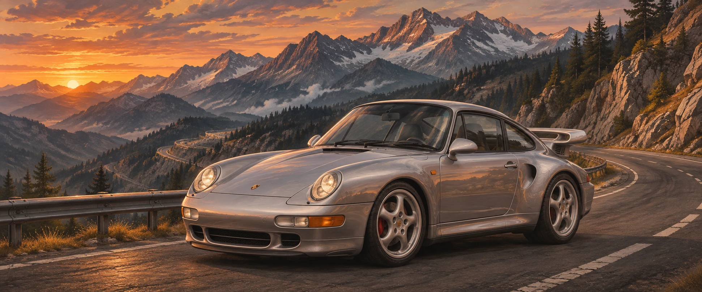

Decades of driving
Build your career through the Evolution eras. Get to know each car, earn your next upgrade and make every race count.
Porsche Unleashed / Browser edition
The unmistakable feel of Need for Speed: Porsche Unleashed, right in your browser. The roads you remember. The career you loved. One more reason to take the long way home.

01 / The familiar feeling
From your first classic to the next hard-earned upgrade, this is racing with a history. Wasm Unleashed brings the original rules, physics and rivals to a modern browser through an independent engine built in Rust.
Build your career through the Evolution eras. Get to know each car, earn your next upgrade and make every race count.
Take on Factory Driver challenges. Master the line, find the balance and prove you know the car inside out.
Jump in from a modern browser. Play with a keyboard, touch controls or a supported controller; local saves keep your career moving.
02 / Green light
A familiar world of winding roads and iconic cars, ready in your browser. Find your rhythm and make the next corner yours.
Play nowHit Play now, then press Start on the game page. Resources download only after Start; keep the tab open while we get everything ready.
Build a career in Evolution or put your skills to the test in Factory Driver. Check the controls ↗
Your progress is saved locally. Use the game toolbar to export a backup or move your saves to another browser.
03 / Before you hit the road
No game installer is needed. Open the game in an up-to-date browser and press Start. WebGPU or WebGL2 support is required; performance depends on your browser and hardware.
Touch controls are included for mobile browsers. Device support and performance vary, so a recent browser and a capable device are recommended. You can lower the render scale in the game toolbar if needed.
Your progress is stored locally in this browser. Clearing site data can remove it. Export your saves from the game toolbar to keep a backup or transfer them to another browser.
Not yet. The browser edition currently supports single-player modes. Browser multiplayer is planned for a later stage.
Yes. Standard gamepads are supported through your browser’s Gamepad API. Connect your controller, then press a button or move a stick so the browser can detect it. Adjust bindings in Options → Controls if needed. Support depends on the browser and controller; wheel force feedback is not available.
Wasm Unleashed is an independent, non-commercial community project based on OpenUnleashed. It is not affiliated with or endorsed by Electronic Arts, Eden Games or Porsche AG.
Yes. The engine and website source are available under GNU GPL version 3 or later. This license applies to the project code; game content and trademarks remain subject to their respective owners’ rights. Read the license or explore the source.
Non-commercial · Community-built